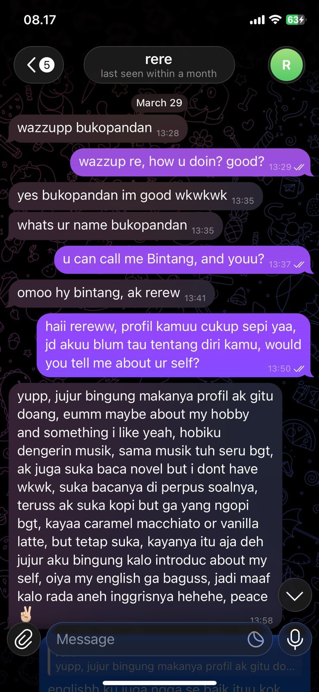
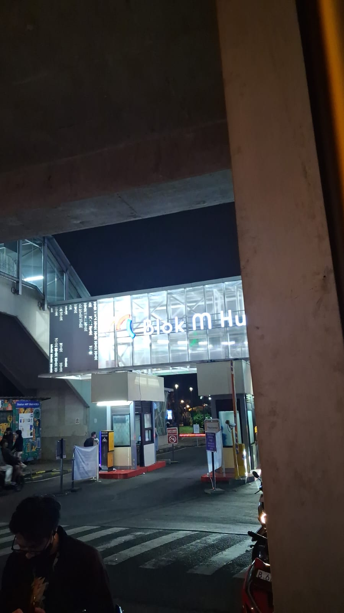
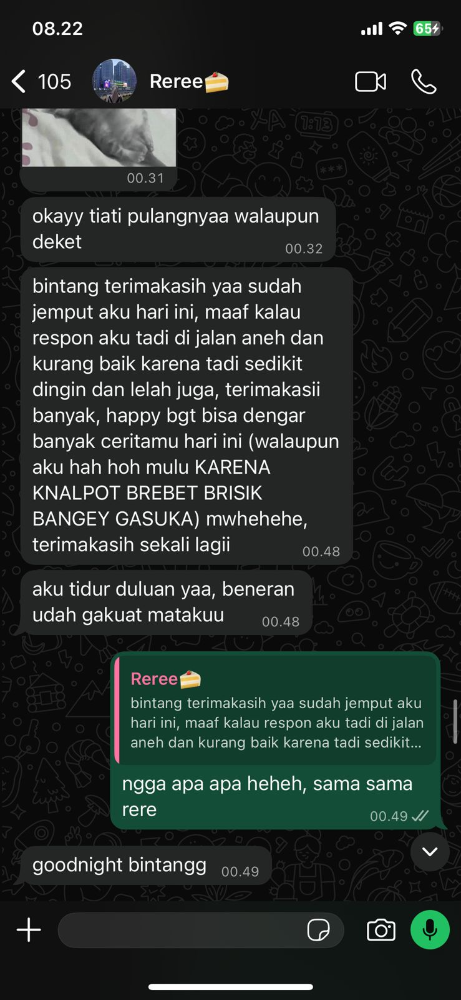
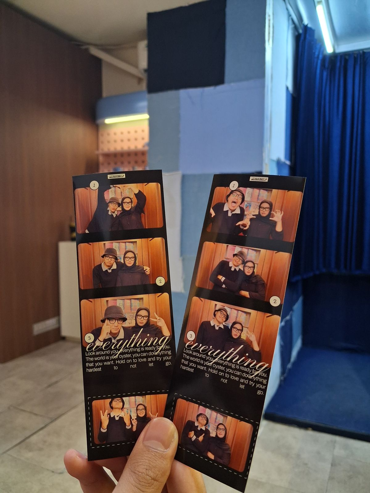
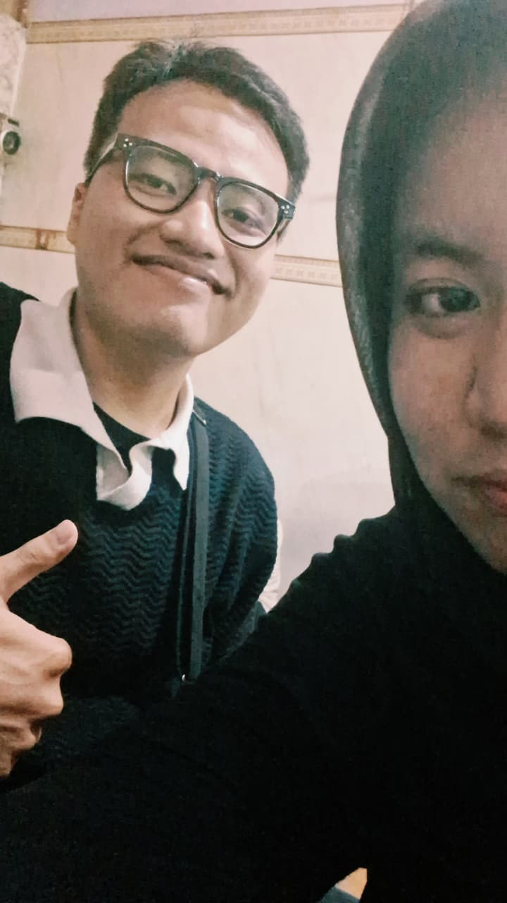

Introduction
The Match & The Hope
Halo sayang... Kamu ingat gak pertama kali kita match? Kamu manggil aku "Buko Pandan", haha. Jujur, saat itu perasaan yang muncul bukan cuma sekadar senang, tapi ada secercah harapan. Setelah melewati masa sendiri beberapa bulan lalu, aku akhirnya memberanikan diri untuk membuka hati lagi. Aku berharap, semoga kali ini kamu adalah pelabuhan terakhirku.
Sejak hari itu, topik obrolan kita rasanya gak pernah putus. Selalu ada hal yang dibahas; mulai dari pengalaman masa lalu, makanan favorit, sampai kehidupan kita sehari-hari. Di mataku saat itu, kamu adalah sosok yang sangat ceria dan seolah jauh dari beban hidup.

The Silent Question
Waktu pun berlalu, hari demi hari. Tanpa sadar, aku tumbuh semakin jatuh cinta sama kamu. Like, wow... I can feel this level of love again. Tapi di sisi lain, muncul sebuah ketakutan kecil: "Apakah kamu merasakan hal yang sama?" Karena takut kamu belum siap, aku memilih untuk memendam perasaan itu cukup lama, sampai akhirnya sebuah momen tiba.

Midnight Ride & The First Bonding
Suatu hari, aku merasa cukup jenuh sambil menunggu kamu pulang kerja. Tiba-tiba terlintas di pikiran, "Apa aku tawarin jemput aja, ya?" Dengan sedikit memberanikan diri, aku tawarkan hal itu ke kamu. Di dalam hati, aku berharap banget kamu bakal mau—dan benar saja, kamu jawab, "Boleh".
Aku langsung bersemangat! Malam itu, aku bahkan harus mengendap-endap keluar rumah karena sudah terlalu larut. Aku otw dengan perasaan bangga dan gak sabar. Sesampainya di sana, kita malah sempat bingung mencari titik jemput, haha. Fun fact, itu mungkin konflik kecil pertama kita.
Tapi begitu di perjalanan pulang, semua bingung itu hilang. Kita mengobrol sepanjang jalan. Aku benar-benar gak menyangka obrolan kita bisa mengalir sepanjang itu tanpa jeda sepi sedikit pun. Perjalanan malam itu menjadi simbol bonding pertama kita, membuatku berspekulasi dalam hati: "Sepertinya, aku bakal menua bersama orang ini."

The Parade in My Heart
Seiring berjalannya waktu, obrolan kita menjadi semakin intens dan romantis. Kita mulai saling berbagi cerita, entah itu tawa maupun air mata. Sampai pada suatu hari, aku memberanikan diri untuk bertanya: "Do you wanna be my girlfriend?" Rasa cemas langsung menyelimuti hatiku, apalagi saat kamu menjawab: "Jawabannya aku kasih tahu besok pas kita ketemu, ya." Wah, itu sukses bikin aku makin deg-degan semalaman!
Besoknya, aku menjemputmu di tempat kerja dengan perasaan super gugup—aku bahkan masih ingat gombalan-gombalan receh yang aku lontarkan buat mencairkan suasana. Setelah bingung mau ke mana, kita akhirnya memutuskan untuk photobooth di tempat kerja kamu. Di ruang tunggu, kamu membahas kembali pertanyaanku kemarin. Dan guess what? Pernyataan cintaku diterima!
Mungkin saat itu ekspresi wajahku kelihatan biasa aja dari luar. Padahal, di dalam hati dan pikiranku, rasanya ramai dan bahagia banget, mirip seperti perayaan parade juara NBA! Di momen itulah, aku mendedikasikan diriku untuk menjaga dan mencintaimu dengan sepenuh hatiku.

The Sweet Ending of the Beginning
Setelah sesi photobooth selesai, kita pulang dan makan di tempat chinese food langgananku. Mungkin itu bukan first impression makan malam yang paling mewah, but it was a great and unforgettable moment for me. Malam itu adalah pertama kalinya aku kembali merasakan kencan malam yang manis setelah 5 tahun lamanya.
Ini adalah akhir dari bab pengenalan kita—sebuah awal cerita yang sangat menyenangkan, dan aku siap untuk lembaran-lembaran berikutnya bersamamu.

Awal yang sangat menyenangkan untuk kita...
Continue to Main Story ➔